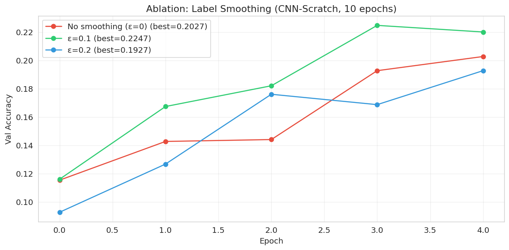
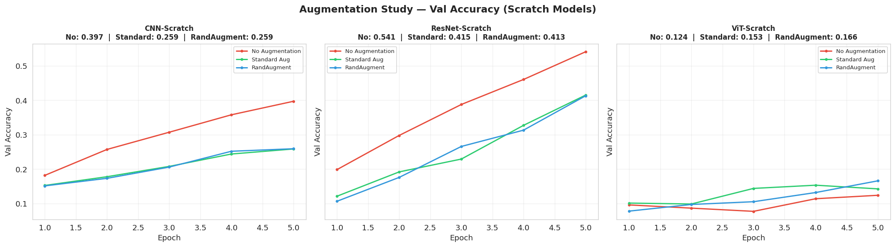
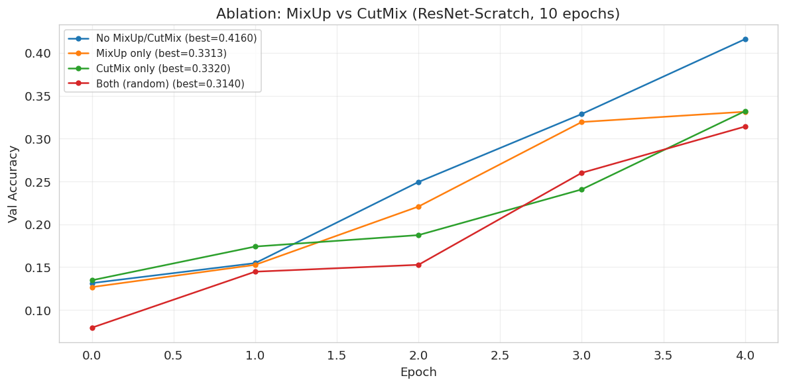
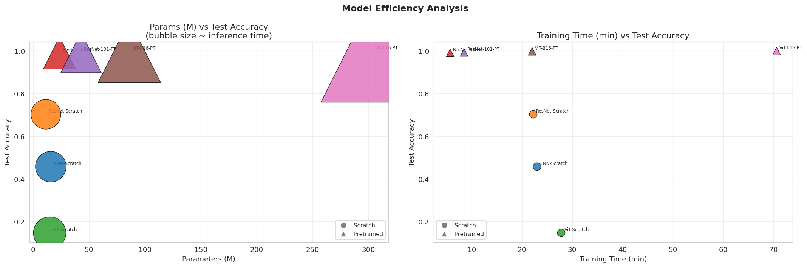
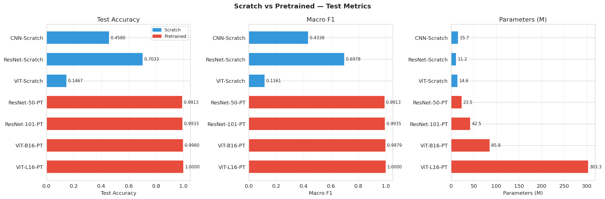
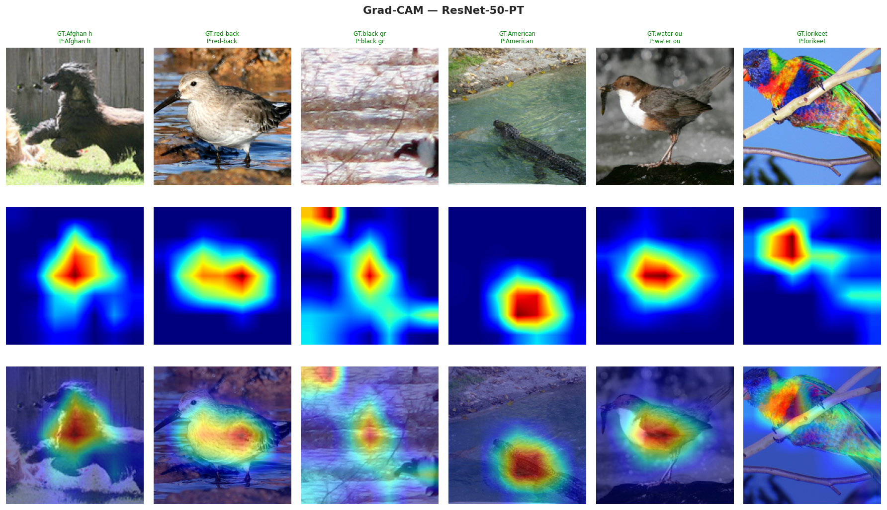
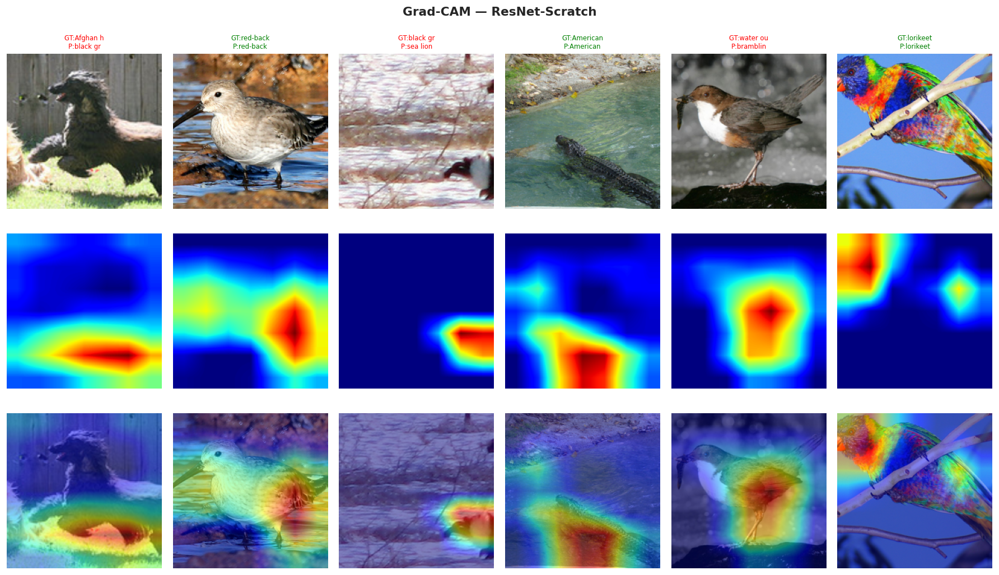
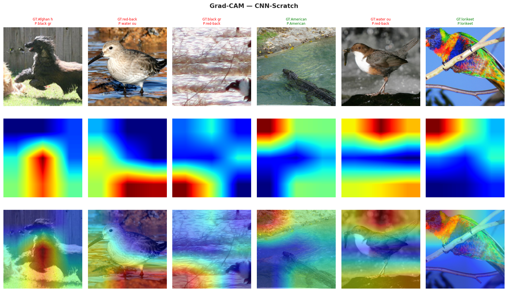
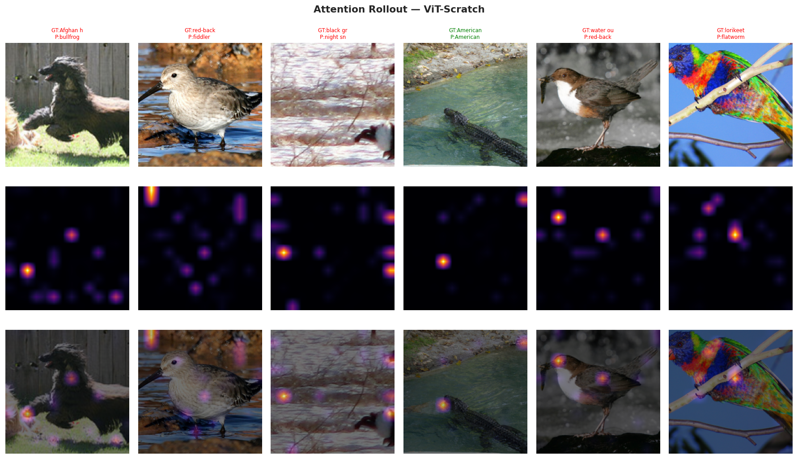

Extensions, limitations, and ablations
Follow-up ideas, known constraints, ablation findings, and interpretability/efficiency visuals for the image models.
assets/image.
Extensions
Ideas to improve or expand the system.
- Swap in lighter ViTs (e.g., DeiT-S) or distilled backbones to reduce latency while keeping accuracy.
- Augment rare textures with class-preserving synthetic data (GAN/diffusion) to aid scratch models.
- Pretrain scratch models with self-supervision (MAE/DINOv2) before supervised finetuning.
Limitations
Known weaknesses and risks.
- Scratch models underfit fine-grained classes; capacity is the main bottleneck.
- Pretrained ViT-L is accurate but slow (53s per test set) and large (303M params).
- No open-set rejection: unseen breeds may be predicted with high confidence.
Key ablation studies
Impact of label smoothing and MixUp/CutMix regularizers.

Label smoothing (CNN-Scratch)
Val accuracy vs epoch for ε ∈ {0, 0.1, 0.2}; ε=0.1 recommended.

Augmentation study
Validation accuracy over 5 epochs under three augmentation settings for all scratch models.

MixUp vs CutMix (ResNet-Scratch)
Val accuracy over 5 epochs under None, MixUp, CutMix, Both; regularizers slowed early convergence on this small dataset.
| Experiment | Conditions | Key finding |
|---|---|---|
| Label smoothing (CNN-Scratch, 10 ep) | ε = 0, 0.1, 0.2 | Differences small at 10 epochs; ε=0.1 recommended. |
| MixUp vs CutMix (ResNet-Scratch, 5 ep) | None (0.416) > MixUp (0.331) > CutMix (0.332) > Both (0.314) | Regularizers hurt early convergence on small datasets. |
| ViT patch size | 8, 16, 32 (commented) | Not run — patch=8 would quadruple tokens. |
| Ensemble diversity | Scratch-only (0.672), Pretrained-only (0.999), Mixed all-7 (0.996) | Adding weak scratch models to strong ensembles degrades performance. |
Comparisons & interpretability
Capacity–performance trade-offs and attention/Grad-CAM snapshots.

Efficiency vs accuracy
Parameter and time trade-offs across all seven models.

Scratch vs pretrained
Accuracy, macro-F1, and parameter comparisons.

Grad-CAM (ResNet-50 PT)
Saliency highlighting discriminative regions.

Grad-CAM (ResNet-Scratch)
Broader, less focused activation consistent with lower accuracy.

Grad-CAM (CNN-Scratch)
Saliency often misses key object regions, mirroring misclassifications.

Attention rollout (ViT scratch)
Head-wise attention aggregation showing focus areas.